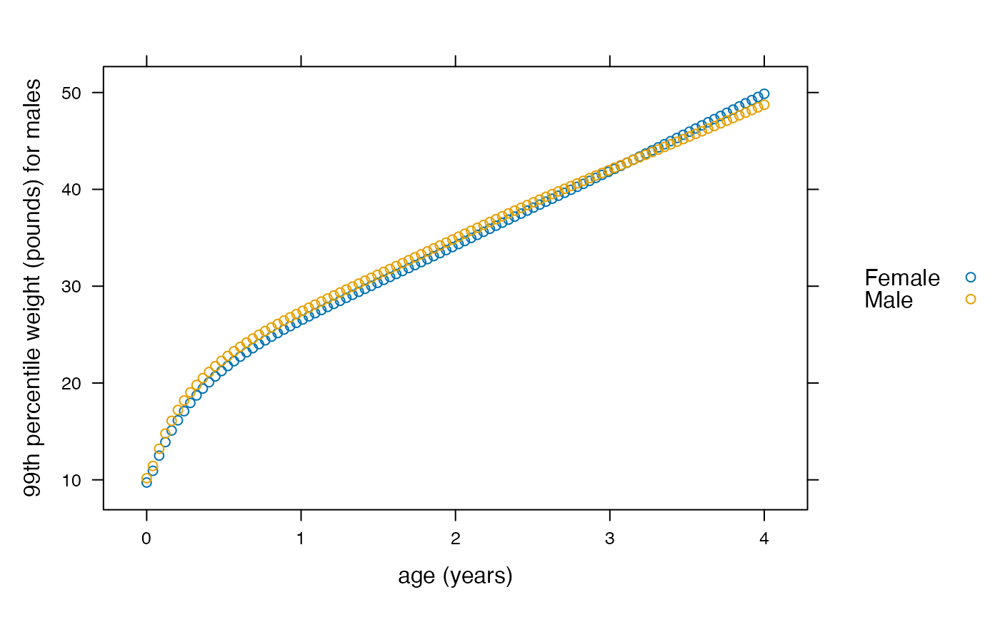
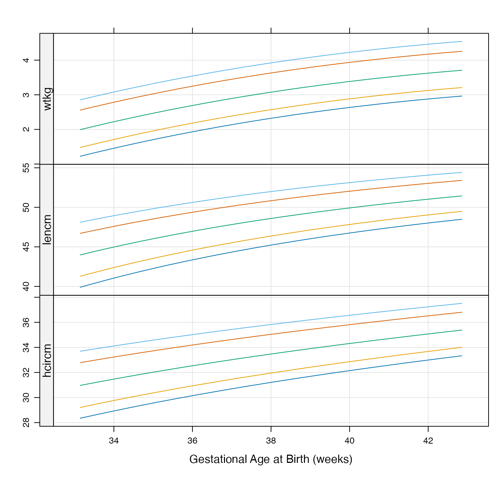
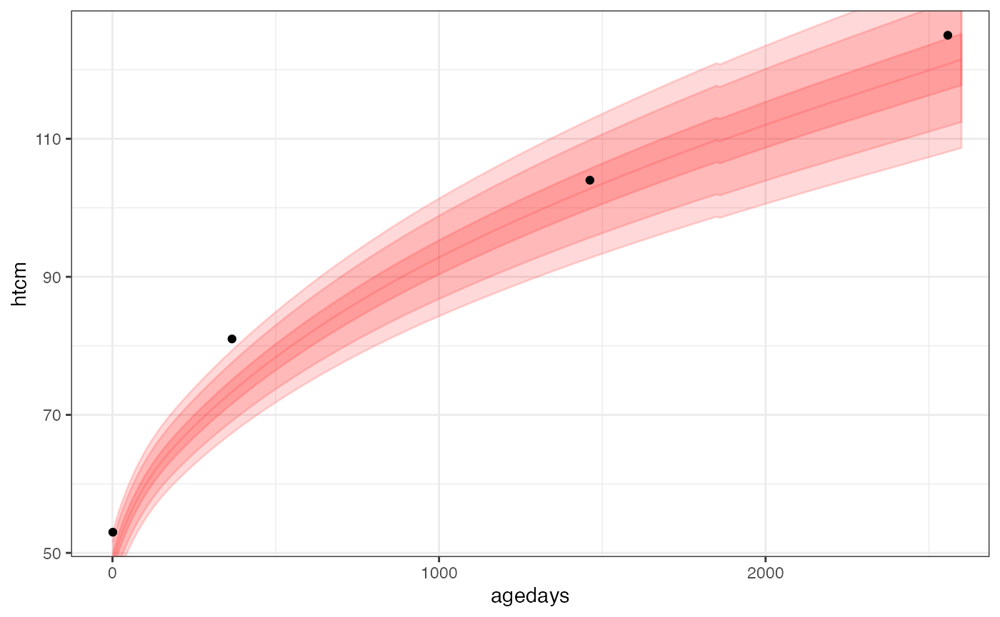
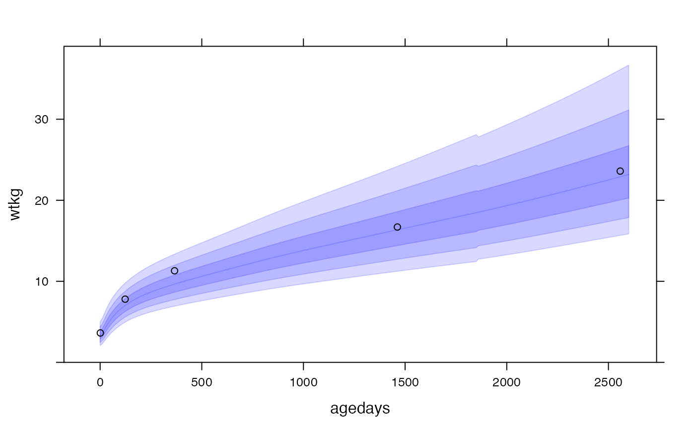

A major feature of this package is a collection of utility functions for conveniently converting anthropometric measurements to z-scores or centiles (and converting z-scores / centiles to measurements) for three major growth standards:
who_)igb_)igfet_)These growth standards have previously not necessarily been easy to access inside an R analysis. In some cases R code has been provided for making conversions with the growth standard but in a form that is difficult to embed and generalize (copying and pasting code that will be frequently used is messy will almost surely lead to errors). Some standards are provided only through published coefficients. The goal here is to put all the standards into a single package with a unified interface, while providing additional functionality like interpolation for regions where a standard’s provided tables are sparse.
The growth standard conversion methods have been painstakingly checked for accuracy through comparisons with the standards provided by the original sources. However, we advise caution and double checking against the original sources when results will impact decisions. Links to the original sources can be found in the sections for each standard below.
The WHO growth standard provides international standard distributions for several anthropometric measurements.
The data / methodology for the WHO growth standard functions in this package come from the WHO child growth standard and the 5-19 years growth reference.
WHO growth standard conversions are available for the following pairings of variables:
| x_var | y_var | span of x_var |
|---|---|---|
| agedays | wtkg (weight kg) | ~10 years (0 - 3682 days) |
| agedays | *lencm (height cm) | 2 years (0 - 6970 days) |
| agedays | *htcm (height cm) | ~19 years (0 - 6970 days) |
| agedays | *lenhtcm (length or height - cm) | ~19 years (0 - 6970 days) |
| agedays | bmi (BMI kg/m2) | ~19 years (0 - 6970 days) |
| agedays | hcircm (head circumference cm) | ~ 5 years (0 - 1856 days) |
| agedays | muaccm (mid upper-arm circumference cm) | ~ 5 years (0 - 1856 days) |
| agedays | ss (subscalpular skinfold) | ~ 5 years (0 - 1856 days) |
| agedays | tsftmm (triceps skinfold thickness mm) | ~ 5 years (0 - 1856 days) |
| htcm | wtkg | 120 cm |
Note that “lenhtcm” implies that length is implied for ages 0-2 years and height for 2+ years. Explicitly specifying the y variable as “lencm” or “htcm” implies that this method of measurement was used regardless of age, and an adjustment will be made accordingly if the measurement method is not standard for the age (e.g. height measurement used for a 18-month-old child.).
Also note that in almost every case the x variable is agedays - the age since birth in days. When the desired x variable is agedays, a simplified set of functions has been created to convert between z-scores or centiles with the following naming convention, for example, when working with wtkg:
who_wtkg2zscore(agedays, wtkg, sex = "Female"): for specified wtkg values at ages agedays, get the corresponding Female z-scoreswho_wtkg2centile(agedays, wtkg, sex = "Female"): for specified wtkg values at ages agedays, get the corresponding Female centileswho_centile2wtkg(agedays, p = 50, sex = "Female"): for given centiles (p=50, or median, as default) at ages agedays, get the corresponding wtkg valueswho_zscore2wtkg(agedays, z = 0, sex = "Female"): for given z-scores (z=0 as default) at ages agedays, get the corresponding wtkg valuesIf you are working with htcm you can swap wtkg for htcm, etc.
As z-scores are related to centiles through a simple conversion, there is a bit of redundancy in having functions for both, but both are provided for convenience.
Here are some examples:
Here we get the WHO median height vs. age for females weekly for the first year:
library(growthstandards)
x <- seq(0, 365, by = 7)
med <- who_centile2lenhtcm(x)
plot(x, med, xlab = "age in days", ylab = "median female height (cm)")Here the defaults of sex="Female" and p=50 were used, giving us the median height for females at the specified ages.
To get the WHO 75th centile weight value for age of males at these same time points, we can do the following:
q75 <- who_centile2lenhtcm(x, p = 75, sex = "Male")Suppose we want to know the WHO centile of a female child at 2 years of age (730.5 days) who is 90 cm tall:
who_lenhtcm2centile(agedays = 730.5, lenhtcm = 90)## [1] 84.19807This girl’s height is at the 89th centile.
We can send vectors of values into any of the functions and lookups in the appropriate tables will be made for each distinct case.
For example, suppose we want to plot the WHO 99th centile of weight for age of boys and girls for the first 4 years of life:
dat <- data.frame(
x = rep(seq(0, 1461, length = 100), 2),
sex = rep(c("Male", "Female"), each = 100))
dat$p99 <- who_centile2wtkg(dat$x, p = 99, sex = dat$sex)
library(lattice)
xyplot(kg2lb(p99) ~ days2years(x), groups = sex, data = dat,
ylab = "99th percentile weight (pounds) for males",
xlab = "age (years)", auto.key = TRUE)
Here we are using a convenience function, kg2lb(), provided with the package to plot the weights in pounds.
Suppose we want to compute the height and weight-for-age z-scores (HAZ and WAZ) for each subject in the cpp data:
haz <- who_lenhtcm2zscore(cpp$agedays, cpp$htcm, sex = cpp$sex)
waz <- who_wtkg2zscore(cpp$agedays, cpp$wtkg, sex = cpp$sex)To utility functions described so far all for measurements against age. To deal with the case of height-for-weight WHO calculations, and also to provide a more generic interface to accessing the WHO growth standards, the following functions are also provided:
who_value2zscore(x, y, x_var = "agedays", y_var = "htcm", sex = "Female")who_value2centile(x, y, x_var = "agedays", y_var = "htcm", sex = "Female")who_centile2value(x, p = 50, x_var = "agedays", y_var = "htcm", sex = "Female")who_zscore2value(x, z = 0, y_var = "htcm", x_var = "agedays", sex = "Female")Here both the x variable and y variable can be specified. For example, the following are equivalent:
who_lenhtcm2centile(agedays = 730.5, lenhtcm = 90)## [1] 84.19807
who_value2centile(x = 730.5, y = 90, x_var = "agedays", y_var = "htcm")## [1] 88.86932But now we can do things like computing height-for-weight centiles:
who_value2centile(x = 90, y = 12, x_var = "htcm", y_var = "wtkg")## [1] 27.61003The INTERGROWTH newborn standard provides standards for newborn weight, length, and head circumference by gestational age and sex from gestational age of 232 days to 300 days.
Functions for this standard have a similar naming structure as we saw for the WHO standards:
igb_lencm2zscore(gagebrth, lencm, sex = "Female"): for specified lencm values at gestational ages at birth gagebrth, get the corresponding Female z-scoresigb_lencm2centile(gagebrth, lencm, sex = "Female"): for specified lencm values at gestational ages at birth gagebrth, get the corresponding Female centilesigb_centile2lencm(gagebrth, p = 50, sex = "Female"): for given centiles (p=50, or median, as default) at gestational ages at birth gagebrth, get the corresponding lencm valuesigb_zscore2lencm(gagebrth, z = 0, sex = "Female"): for given z-scores (z=0 as default) at gestational ages at birth gagebrth, get the corresponding lencm valuesThe same functions are available for weight wtkg and head circumference hcircm.
Usage is also the same as in WHO.
Suppose we want to get the birth length z-scores for all subjects in our cpp data set:
hbaz <- igb_lencm2zscore(cpp$gagebrth, cpp$birthlen, sex = cpp$sex)Also, we can make a quick and crude recreation of the boys charts seen here with this:
chartdat <- do.call(rbind, lapply(c(3, 10, 50, 90, 97), function(p) {
data.frame(p = p, gagebrth = 232:300,
make.groups(
wtkg = igb_centile2wtkg(232:300, p, sex = "Male"),
lencm = igb_centile2lencm(232:300, p, sex = "Male"),
hcircm = igb_centile2hcircm(232:300, p, sex = "Male")
))
}))
xyplot(data ~ gagebrth / 7 | which, groups = p, data = chartdat,
type = c("l", "g"),
strip = FALSE, strip.left = TRUE,
scales = list(y = list(relation = "free")),
layout = c(1, 3), as.table = TRUE,
xlab = "Gestational Age at Birth (weeks)", ylab = ""
)
This package also has functions for dealing with the INTERGROWTH international standards for fetal growth based on serial ultrasound measurements. This data covers gestational ages from 7 to 40 weeks (98 to 280 days), for the following variables:
| variable | description |
|---|---|
| hccm | head circumference (cm) |
| bpdcm | biparietel diameter (cm) |
| ofdcm | occipito-frontal diameter (cm) |
| accm | abdominal circumference (cm) |
| flcm | femur length (cm) |
As with previous growth standard methods, a similar interface to this growth standard is provided with the following conventions for, for example, hccm:
igfet_flcm2zscore(gagedays, flcm, sex = "Female"): for specified flcm values at gestational ages gagedays, get the corresponding Female z-scoresigfet_flcm2centile(gagedays, flcm, sex = "Female"): for specified flcm values at gestational ages gagedays, get the corresponding Female centilesigfet_centile2flcm(gagedays, p = 50, sex = "Female"): for given centiles (p=50, or median, as default) at gestational ages gagedays, get the corresponding flcm valuesigfet_zscore2flcm(gagedays, z = 0, sex = "Female"): for given z-scores (z=0 as default) at gestational ages gagedays, get the corresponding flcm valuesUsage is similar as the other growth standards. For example, to get the centile for child at 100 gestational days with an ultrasound head circumference measurement of 11cm:
igfet_hccm2centile(100, 11)## [1] 93.39812This package has functions for dealing with the INTERGROWTH international standards for postnatal growth measurements for preterm infants. This data covers postmenstrual ages from 27 to 64 weeks (189 to 448 days), for the following variables:
| variable | description |
|---|---|
| wtkg | weight (kg) |
| htcm | height (cm) |
| hcircm | head circumference (cm) |
As with previous growth standard methods, a similar interface to this growth standard is provided with the following conventions for, for example, wtkg:
igprepost_wtkg2zscore(pmagedays, flcm, sex = "Female"): for specified flcm values at gestational ages pmagedays, get the corresponding Female z-scoresigprepost_wtkg2centile(pmagedays, flcm, sex = "Female"): for specified flcm values at gestational ages pmagedays, get the corresponding Female centilesigprepost_centile2wtkg(pmagedays, p = 50, sex = "Female"): for given centiles (p=50, or median, as default) at gestational ages pmagedays, get the corresponding flcm valuesigprepost_centile2wtkg(pmagedays, z = 0, sex = "Female"): for given z-scores (z=0 as default) at gestational ages pmagedays, get the corresponding flcm valuesUsage is similar as the other growth standards. For example, to get the centile for child at 100 gestational days with an weight of x:
igprepost_wtkg2centile(100, 11)## [1] NAShifting from anthropometry about the child, the INTERGROWTH gestational weight gain standard focuses on the mother’s weight gain throughout pregnancy.
Note that the standard currently only works for mother’s who had a “normal” BMI before pregnancy of 18.5 - 24.99 kg / m^2.
The following functions can be used
iggwg_value2zscore(gagedays, val, bmi = NULL): for specified gestational ages gagedays and mother’s weight gain val (change in weight, kg), get the corresponding z-scoresiggwg_value2centile(gagedays, val, bmi = NULL): for specified gestational ages gagedays and mother’s weight gain val (change in weight, kg), get the corresponding centilesiggwg_zscore2value(gagedays, z = 0, bmi = NULL): for given z-scores (z=0 as default) at gestational ages gagedays, get the corresponding gestational weight gain valuesiggwg_centile2value(gagedays, p = 50, bmi = NULL): for given centiles (p=50, or median, as default) at gestational ages gagedays, get the corresponding gestational weight gain valuesFor example, to see what the weight gain, in pounds, for the 1st, 5th, 50th, 95th, and 99th centiles are for a woman at 40 weeks:
kg2lb(iggwg_centile2value(40 * 7, c(1, 5, 50, 95, 99)))## Argument 'bmi' not supplied... presuming valid pre-pregnancy BMI.## [1] 11.95860 16.46159 30.18724 49.18233 59.04926This package provides a few utility functions for making it easy to add any of the growth standards as an overlay on a plot. Methods are available for ggplot, lattice, and rbokeh. These functions have similar parameters to the growth standard lookup functions described above. The methods available are:
ly_who()ly_igb()ly_igfet()Some examples are below.
Here is an example of using the utility function, geom_who(), with a plot of a CPP subject’s height vs. age, plotting the default of WHO bands at centiles 1, 5, 25, 50, 75, 95, 99:
library(ggplot2)
ggplot(data = subset(cpp, subjid == 8), aes(x = agedays, y = htcm)) +
geom_who(x_seq = seq(0, 2600, by = 10), y_var = "htcm") +
geom_point() +
theme_bw()
This example of uses panel.who() to superpose the WHO growth standard with a plot of a CPP subject’s height vs. age, with WHO bands at z-scores -3, -2, -1, 0, 1, 2, 3:
xyplot(wtkg ~ agedays, data = subset(cpp, subjid == 8),
panel = function(x, y, ...) {
panel.who(x = seq(0, 2600, by = 10),
sex = "Male", y_var = "wtkg", p = pnorm(-3:0) * 100)
panel.xyplot(x, y, ...)
},
ylim = c(0, 39),
col = "black")